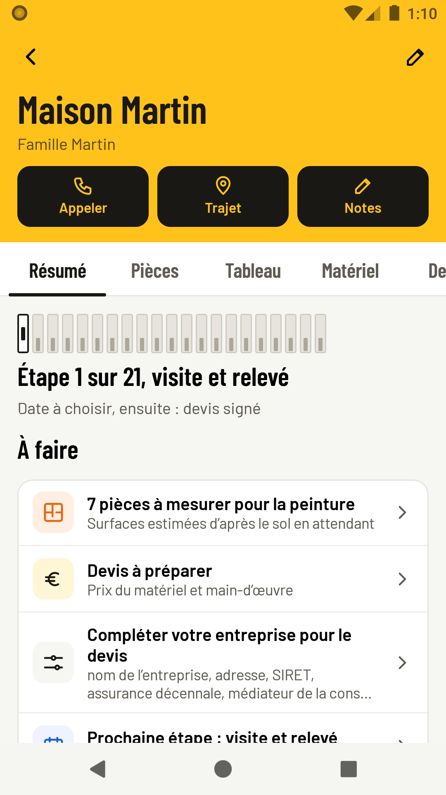
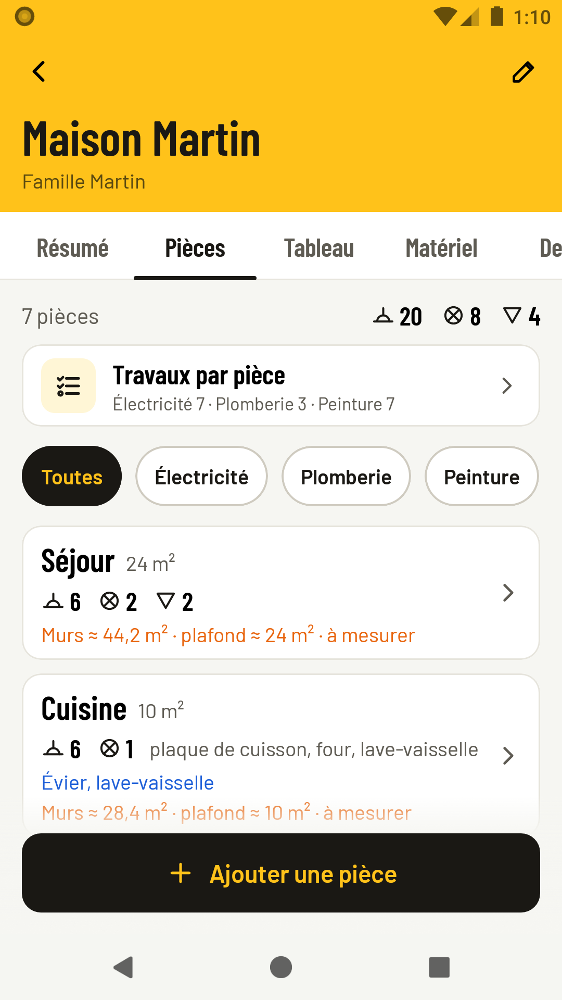
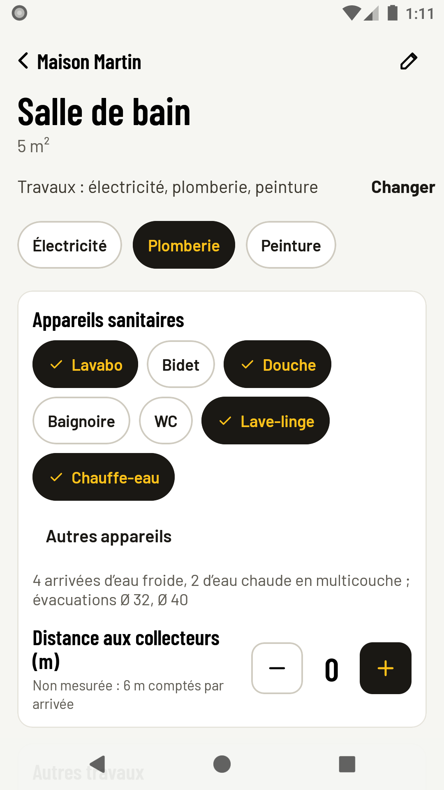
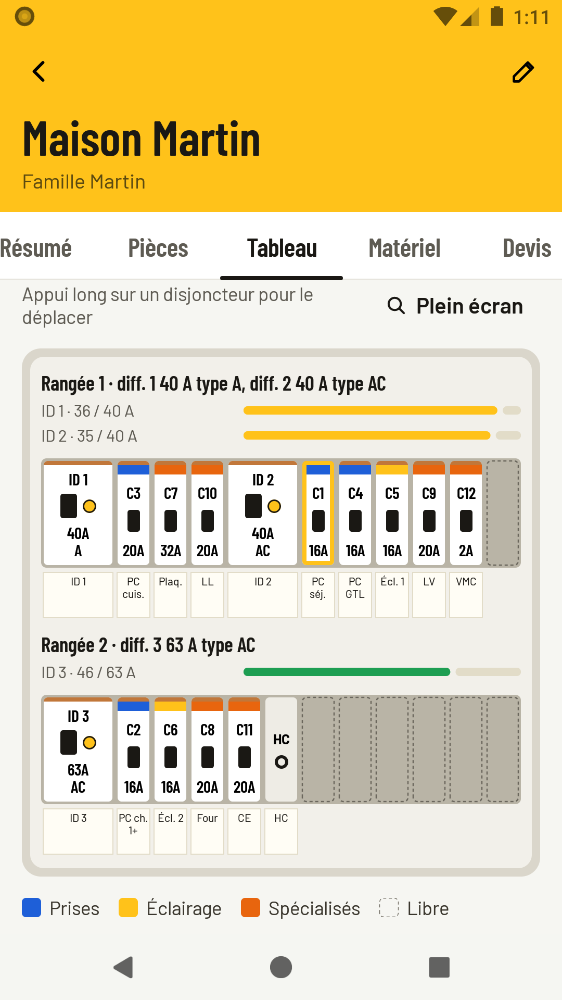
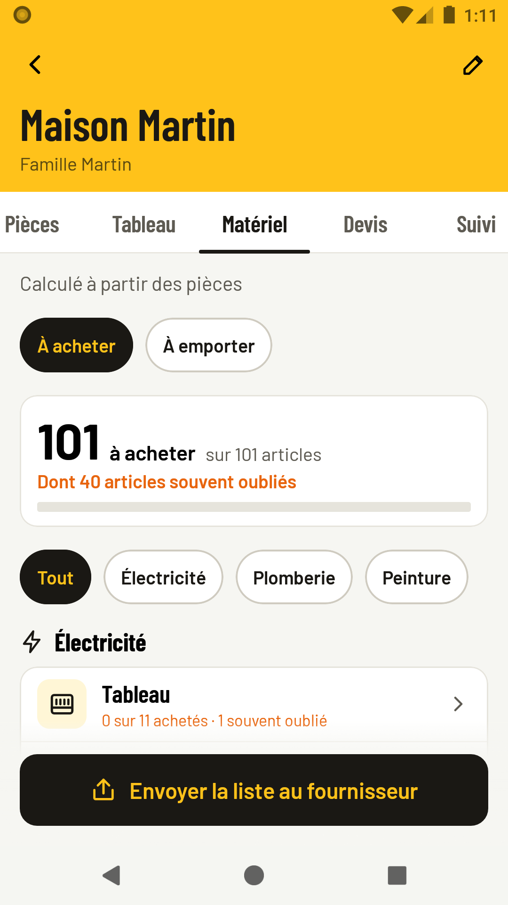

Jalon
Chaque étape jalonnée, rien d'oublié.
L'application des artisans en électricité, plomberie et peinture : pièces, tableau, matériel, devis et suivi du chantier, avec ce qu'on oublie toujours signalé. Tout reste sur le téléphone.
Télécharger l'APK
Tout le chantier, sans rien oublier
Chaque onglet tient sur un écran ; le détail s'ouvre d'une touche.
Travaux pièce par pièce
À la création, une grille dit ce qui se fait dans chaque pièce : électricité, plomberie, peinture. Jalon retient vos choix pour la suite.
Tableau NF C 15-100
Minimums par pièce, circuits, différentiels et coffret dessiné comme au mur. Va-et-vient, télérupteurs, prises doubles et triples. Étiquettes, schéma et dossier Consuel en PDF.
Plomberie
Appareils sanitaires, tubes multicouche, PER ou cuivre, arrivée générale dimensionnée, évacuations, groupe de sécurité et raccords diélectriques.
Peinture
Surfaces des murs et plafonds, portes et fenêtres déduites, préparation selon l'état des murs, litres de peinture avec les pertes.
Matériel complet
Une ligne par famille, les articles souvent oubliés signalés, le déjà acheté replié. La liste part au fournisseur, les outils à emporter sont cochés.
Devis, factures, suivi
Un lot par métier, « Avez-vous pensé à… » avant d'émettre, signature sur le téléphone, acomptes et solde. Étapes, heures, réserves et contrôles avant réception.
À l'écran
Une maison de démonstration, avec les trois métiers.




Installer en trois gestes
Sur un téléphone ou une tablette Android 8 ou plus récent.
- TéléchargerTouchez « Télécharger l'APK » depuis le téléphone.
- AutoriserSi Android le demande, autorisez l'installation depuis votre navigateur.
- InstallerOuvrez le fichier, confirmez, puis créez votre premier chantier.
Pour mettre à jour, installez la nouvelle version par-dessus : vos chantiers sont gardés. Vous aviez Chantier Élec ? Jalon s'installe par-dessus et garde tout. Le guide complet.
Vos données restent sur le téléphone
Jalon n'a pas accès à internet : pas de compte, pas de serveur, pas de publicité, pas de statistiques. Vos chantiers ne quittent le téléphone que si vous envoyez un PDF, une liste ou une sauvegarde. Politique de confidentialité.
Les calculs suivent la NF C 15-100 (série 2024) et le NF DTU 60.11 d'après les guides publics des fabricants, de Promotelec, de la CAPEB et du Consuel. C'est une aide : l'artisan reste seul juge de son installation.